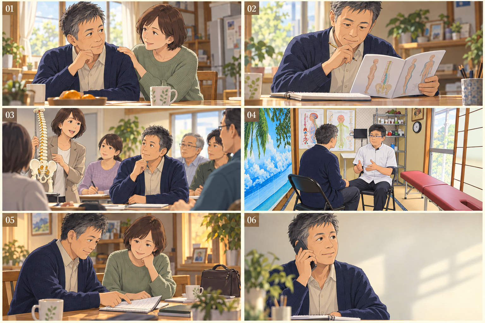

相談先を探している人へ
先生と実際の院内を見せ、初回予約の不安を減らす。
実写風 → 初回予約 → 来院集客2本・説明会1本。3本目の画像を新しく制作し、集客用2本の参考を反応・来院実績の観点で再選定しました。
先生と実際の院内を見せ、初回予約の不安を減らす。
実写風 → 初回予約 → 来院仕事・家事の場面から、自分も相談しようと思ってもらう。
アニメ → 初回相談・予約 → 来院自分・家族の健康や将来への関心を、説明を聞く一歩へ。
アニメ → 問い合わせ → 実参加先生のご要望：近隣の方を中心に幅広く歓迎し、まず集客。年齢・性別は人物設定の仮説であり、受付条件ではありません。
対象：知多市にしの台と通える周辺地域。肩・腰や姿勢が気になり、相談先を探している方。人物設定は55〜75歳程度を仮説とし、男女を限定しない。
ゴール：初回予約の確定 → 実際の初回来院
先生と実際の院内を見せ、「どんな人・どんな場所か分からない」という来院前の不安を減らす。
知多市にしの台で、肩や腰の相談先をお探しなら。Nori施術院の前田です。まずは、気になることを伺います。骨盤や姿勢のことも、ご相談ください。施術についてのご質問も、お気軽に。初回のご予約は、Nori施術院へお電話ください。
対象：同じ来院圏内で、仕事・家事に忙しく自分のケアを後回しにしている方。人物設定は40〜60代の女性を仮説とするが、性別・年齢を受付条件にしない。
ゴール：初回相談・予約の確定 → 実際の初回来院
まだ院を探していない人に日常の場面で気づいてもらい、相談という行動を促す。01とは表現だけでなく検討段階を分ける。
仕事に家事。自分のからだは、つい後回し。気になる肩や腰、相談してみませんか。知多市にしの台の、Nori施術院。気になることから、お話しください。骨盤や姿勢にも、目を向けながら。初回のご相談・ご予約は、お電話で。

左上から右へ01〜06。画像を押すと拡大できます。制作：内蔵画像生成機能。30秒構成・ナレーションは下記に対応。
対象：第一対象：施術を受けた経験があり、自分・家族の健康をもっと知りたい方。第二対象：副業や定年後の学びに関心がある40〜60代。人物は架空。
ゴール：説明会・個別説明への問い合わせ → 日時確定 → 実参加
「学びたいけれど、何から始めるか分からない」に答え、まず説明を聞く段階へ。受講・開業の即決を求めない。
自分や家族の健康を、もっと知りたい。カイロプラクティックを、学んでみませんか。どんなことを学ぶのか。どう始めるのか。まずは説明を聞くところから。副業や、これからの仕事に関心がある方も。説明のご相談は、Nori施術院へ。
料金・所要時間・院内・アクセス・予約方法を一つの案内先にまとめる。電話対応で予約希望日時まで確認します。
同じ来院圏・期間・予約先で比較する案。電話クリックと予約確定、初回来院は別々に記録します。
既存のお客様や健康・学びに関心のある方から開始。説明内容、日時、場所、費用を確認してから参加を募集します。
問い合わせ → 日時確定 → 実参加を記録。集客2本とは別の成果・予算で管理します。
このページは制作レビュー用です。実際の広告の予約先は、先生の受付方法と掲載情報を確認して整えます。
2026年10月11日確認。公開再生数と来院成果を分けて確認しました。再生数は露出の根拠になりますが、広告配信・有名IPの影響があり、予約や来院の証明とは限りません。前回の01・02は主参考から外し、03は継続採用します。
リベロ接骨院
確認・実績：24分01秒。179,204回再生・高評価1,168（2026-10-11のYouTube表示）。文字起こしで冒頭と相談場面、説明欄で予約リンクを確認。全編の映像精査は未実施。
Noriで取り入れる点：悩みを聞く会話、先生の顔、説明、予約先という流れ。Noriでは冒頭の地域・悩み、先生と院内、相談の流れ、電話予約を30秒にまとめる。
骨を鳴らす演出・若年女性への注目・即時改善・電気治療は採用しない。高再生でもNoriにそのまま合う作品ではなく、構造の一部だけを採用する。
明治安田公式YouTubeチャンネル
確認・実績：30秒。12,690,742回再生（2026-10-11のYouTube説明欄）。公式絵コンテ・台詞と動画説明を確認。広告／自然再生の内訳、来場・成約数は非公開。
Noriで取り入れる点：買い物などの日常から、家族を通じて健康イベントへの参加を身近にする構成。Noriでは仕事・家事の後の気づきから、近隣で相談する一歩へつなぐ。
有名キャラクターや台詞はコピーしない。ブランド知名度や広告費の影響を除けないため、再生数をNoriの集客予測にしない。
zenkenkai公式チャンネル
確認・実績：30秒。総健美塾の公式掲載から確認。2026-10-11に再生し、前職・年齢を示す人物紹介と相談場面を確認。全編の精査は未実施。
Noriで取り入れる点：学びを自分の将来に結びつける発想を採用。Noriでは家族の健康を先に、副業への関心を後に置き、説明の問い合わせへつなぐ。
出演者の実績をNoriの実績にしない。未経験からの収益、開業成功や就業を保証する表現にしない。
ムビサク
確認・実績：27秒・縦型。1,337回は制作会社のYouTube公開動画の再生数であり、Meta広告本配信の数値ではない。動画フレームと制作記事を確認。CTR・CPC好調との記述はあるが具体値・予約数は非公開。
Noriで取り入れる点：身体の悩みを短く提示し、施術院への行動を促す広告形式。Noriの01では実際の先生・院内と相談の流れを短く見せる。
高再生・集客成功の主根拠にはしない。生成人物による改善体験や人工的なBefore／Afterは使わない。
oricon掲載／相葉雅紀出演
確認・実績：15秒。18,316回再生・高評価508（2026-10-11のYouTube表示）。動画ページ・フレームと公式企画説明を確認。当該動画からの入会・予約数は未確認。
Noriで取り入れる点：忙しい生活→始めにくい理由を小さくする→行動、という短い構造。Noriでは初来院の不安に、先生・部屋・相談の流れで答える。
大ヒットや集客成功が確認できた作品とは扱わない。タレント、歌、ジム固有のサービスは移植しない。
自社経営の尾張旭ME整体院：新規15〜20人／月→36人（Web31人）。実写・アニメ動画に加え検索広告等を併用した自社報告。単独動画の成果ではない。 提供者の一次事例
リベロ接骨院の運用会社による院長インタビュー：14日間55人の新規来院と公表。チャンネル運用全体の自己報告であり、上記1本の成果ではない。 提供者の一次事例
実写・30秒・中高年向け・高再生・来院成果を1本で同時に確認できる作品は今回未発見です。再生の多さとNoriへの適合性を分けて判断しています。